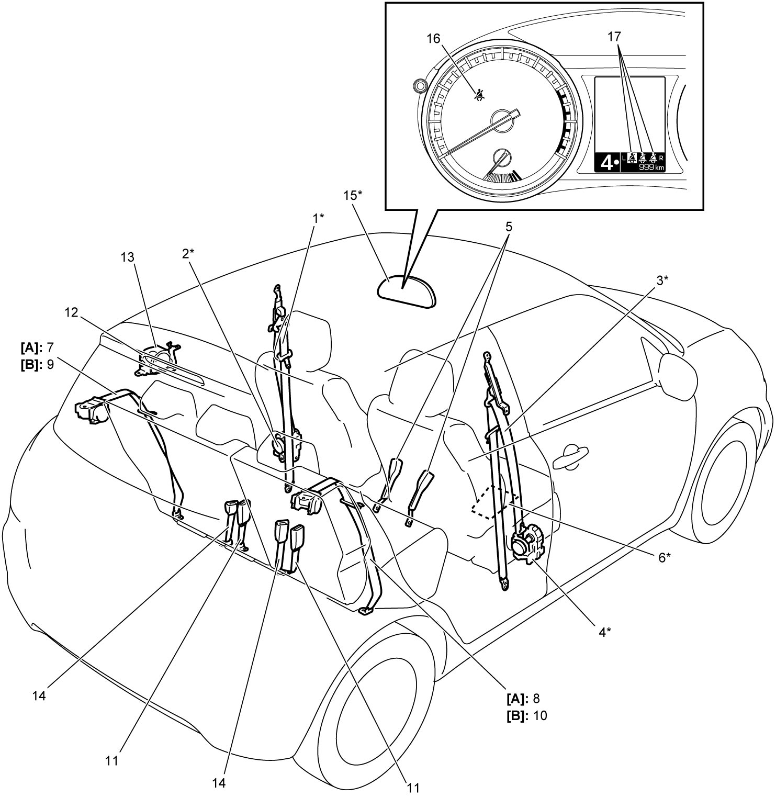

8A
| Seat Belt Construction |
NOTE:
The figure shows LHD. For RHD, parts with (*) are installed on the opposite side.

 "Expand image")
| [A]: | 4, 8 or 9-channel air bag system | 6. | Passenger seat belt reminder sensor (if equipped) | 13. | Center rear seat belt assembly (with ELR) |
| [B]: | 11-channel air bag system | 7. | Left-side rear seat belt assembly (with ELR) | 14. | Center rear seat belt buckle |
| 1. | Driver front seat belt assembly (with ELR and pretensioner) | 8. | Right-side rear seat belt assembly (with ELR) | 15. | Combination meter |
| 2. | Driver seat belt pretensioner | 9. | Left-side rear seat belt assembly (with ELR and pretensioner) | 16. | Front seat belt reminder light |
| 3. | Passenger front seat belt assembly (with ELR and pretensioner) | 10. | Right-side rear seat belt assembly (with ELR and pretensioner) | 17. | Rear seat belt reminder light (if equipped) |
| 4. | Passenger seat belt pretensioner | 11. | Rear seat belt buckle | ||
| 5. | Front seat belt buckle | 12. | Retractor |
Seat Belt Assembly with ELR
Seat belt assembly with emergency locking retractor (ELR) is designed so that it locks immediately (to prevent the webbing from being pulled out of the retractor any further) when any of the following items is detected as exceeding each set value:
•Speed at which the webbing is pulled out of the retractor
•Acceleration or deceleration of vehicle speed
•Inclination
•Acceleration or deceleration of vehicle speed
•Inclination
Seat Belt Assembly with ELR and Pretensioner
The seat belt assembly with ELR and a pretensioner has a pretensioner mechanism which operates in linkage with the air bag in addition to the described ELR.
The pretensioner is incorporated in retractor and controlled by SDM as one of air bag system components. It will be activated at the same time as the driver and passenger air bag (inflator) module when an impact at the front of vehicle exceeds the specified value.
When servicing seat belt assembly with pretensioner, observe all WARNINGs and CAUTIONs and Precautions for Air Bag System Service.
Seat Belt Reminder
If driver, passenger or rear seat belt is unfastened under the following conditions, seat belt reminder light and warning buzzer inform that driver, passenger or rear seat belts is unfastened. Front seat belt reminder light or rear seat belt reminder lights (if equipped) is located in combination meter. Warning buzzer is located inside combination meter.
These reminder lights and warning buzzer operate as follows:
•Driver and passenger seat belt reminders
—Seat belt reminder light comes on if driver or passenger seat belt is unfastened when ignition is “ON”.
—If vehicle runs with seat belt unfastened and the speed exceeds 15 km/h (9 mile/h), warning buzzer operates for approximately 95 seconds and the corresponding seat belt reminder light flashes synchronously with buzzer. When warning buzzer stops operating, the corresponding seat belt reminder light stays ON.
—While vehicle is running at more than 15 km/h (9 mile/h) and if driver or passenger seat belt is unfastened, warning buzzer operates for approximately 95 seconds and the corresponding seat belt reminder light flashes synchronously with buzzer. When warning buzzer stops operating, the corresponding seat belt reminder light stays ON.
•Rear seat belt reminders—If vehicle runs with seat belt unfastened and the speed exceeds 15 km/h (9 mile/h), warning buzzer operates for approximately 95 seconds and the corresponding seat belt reminder light flashes synchronously with buzzer. When warning buzzer stops operating, the corresponding seat belt reminder light stays ON.
—While vehicle is running at more than 15 km/h (9 mile/h) and if driver or passenger seat belt is unfastened, warning buzzer operates for approximately 95 seconds and the corresponding seat belt reminder light flashes synchronously with buzzer. When warning buzzer stops operating, the corresponding seat belt reminder light stays ON.
—If rear seat belt(s) is unfastened when engine is started, the corresponding seat belt reminder light(s) comes on for 35 seconds.
—If rear seat belt(s) is unfastened while engine is running, the corresponding seat belt reminder light(s) comes on for 35 seconds.
—If rear seat belt(s) is unfastened while vehicle speed is above 15 km/h (9 mile/h), the corresponding seat belt reminder light(s) comes on for 35 seconds and warning buzzer sounds one time.
—If rear seat belt(s) is fastened while seat belt reminder light(s) is on, the reminder light(s) goes out.
—If rear seat belt(s) is unfastened while engine is running, the corresponding seat belt reminder light(s) comes on for 35 seconds.
—If rear seat belt(s) is unfastened while vehicle speed is above 15 km/h (9 mile/h), the corresponding seat belt reminder light(s) comes on for 35 seconds and warning buzzer sounds one time.
—If rear seat belt(s) is fastened while seat belt reminder light(s) is on, the reminder light(s) goes out.